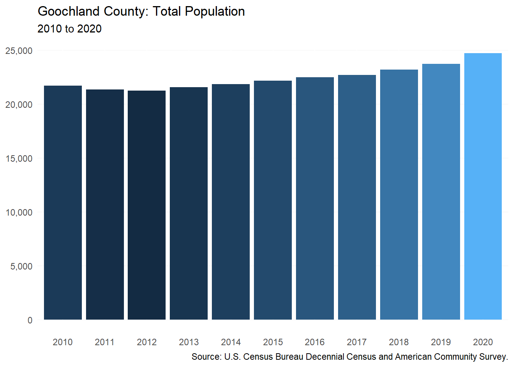
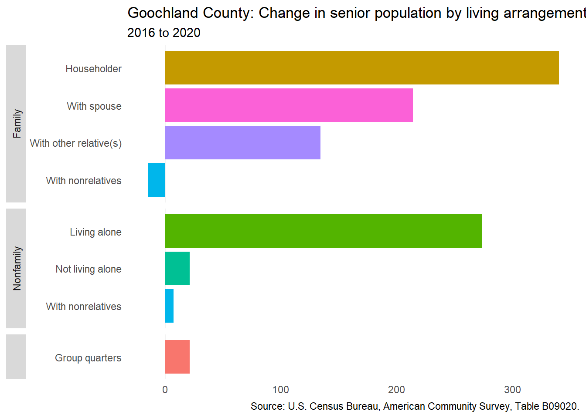

17 New Kent County
This chapter is a summary of the major changes to the New Kent County’s population and housing market in the past five years.
17.1 Takeaways
- The county has grown by 24 percent since 2010 — reaching a population of 22,945 as of 2020.
- Much of the population growth in recent years has been a result of domestic migration.
- Renters are exiting the county, while more and more new homeowners are setting up permanent residence in the county — especially homeowners with children (+463 households between 2016 and 2020).
- If home sales trends continue, median home price in the county is well on its way to $400,000.
- Few rental options in the county leave lower income households having to rent single-family detached homes or simply leave the county.
- Those renters that remain in the county are seeing increasing cost burden.
17.2 Demographic and socioeconomic changes
17.2.1 Population changes
Since 2010, New Kent County’s population has been growing slowly — by a few hundred residents each year. But by 2020, the population experienced a slight decline of 146 residents from 2019’s population of 23,091.

New Kent County’s population change has been driven largely by domestic migration. Between 2020 and 2021, the population was estimated to have increased by 845 residents due to people moving into the county.

17.2.2 Household characteristics
The county has seen a decreasing number of renter households across the board. But homeowners continue to come to the county — especially homeowner households with children. Between 2016 and 2020, there was an increase of 463 homeowners with children.

The greatest increases in the senior population in the county have been among seniors living with a spouse (+498). In contrast to other localities, New Kent County is not seeing a large increase in seniors living alone — suggesting that senior families are choosing to stay or move to New Kent County.

17.2.3 Income and wages
Homeowner median household income has been on the incline from 2016 to 2020 — going from $92,651 in 2016 to $104,545 in 2020, a 14 percent increase. Although renter median household income was on its way up from 2016 to 2017, median renter household income has been on decline since a high of $60,440 in 2017.

17.2.4 Persons with disabilities
…..

17.3 Housing supply and market changes
17.3.1 Homeownership
New Kent County median home price has been increasing in recent years. From a low of $294,719 in September 2017 to a high of $407,231 in May 2022, median home price in the county has increased nearly 40 percent.
17.3.2 Rental
CoStar does not list any multifamily properties in New Kent County. However in 2020, there was an estimated 815 renters in the county. This was a decrease from 2016 when there were 1,202 renters (16 percent of total households). Based on U.S. Census Bureau estimates the majority (89 percent) of those 815 renter households in the county live in single-family detached homes.

17.3.3 Housing assistance
The National Housing Preservation Database lists no federally-assisted housing properties in New Kent County.
17.3.4 Naturally-occurring affordable housing
CoStar does not list any properties that can be defined as naturally-occurring affordable housing within New Kent County. However, there are at least three manufactured home communities located in the county. These communities represent a small but important source of affordability in the county.
Putze’s Mobile Home Park located in Quinton is an 11 unit community and Long Acres Mobile Home Park is a 24 unit community located in Providence Forge.
Rockahock Park is a combination manufactured home community and RV campground with an indeterminate amount of lots.
17.4 Gap analysis
17.4.1 Affordability of current housing stock
A lack of diverse rental options leave lower income households with few housing options in the county aside from renting a single-family home. To purchase a single-family home, the typical renter in the county would need to make at least $17,000 more than they did in 2020.

In spite of a low number of rental housing options in the county, there was still a shortage of 255 rental housing units for households making 80 percent AMI or less in 2018. This shortage is an increase from 2015 when the shortage was 135. The increase in deficit was most significant for households making between 51 and 80 percent AMI — an increase of 75 households from zero.
17.4.2 Impact of housing costs
Although the number of renter households in the county has been declining, the share of cost-burdened renters has only increased. In 2018, 34 percent of renter households were cost-burdened compared to about 26 percent in 2015. For homeowners, the number of cost-burdened households has remained largely unchanged (1352 in 2015 and 1322 in 2018). But as new homeowners come into the county, the share of cost-burdened homeowners has declined from 22 to 20 percent.
Available data from William and Mary’s Project HOPE shows that the number of enrolled students experiencing homelessness in the county has declined in recent years. The county’s McKinney-Vento Act data showed that there were 37 students experiencing homeless in the 2016-2017 school year. By the 2019-2020, that number had declined to 26.